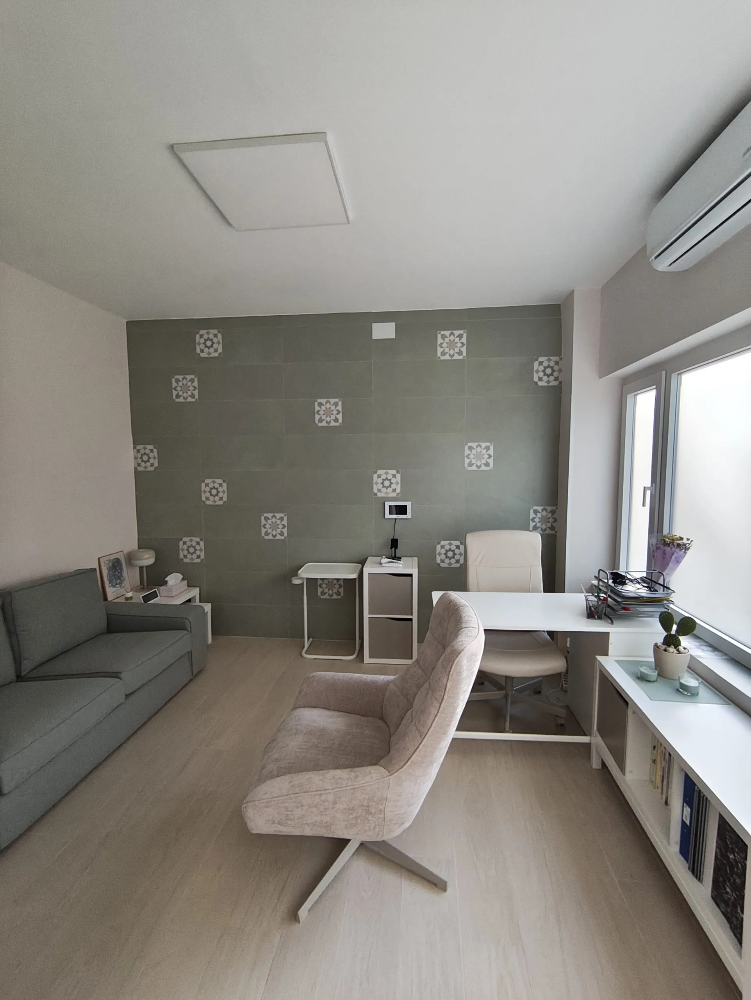
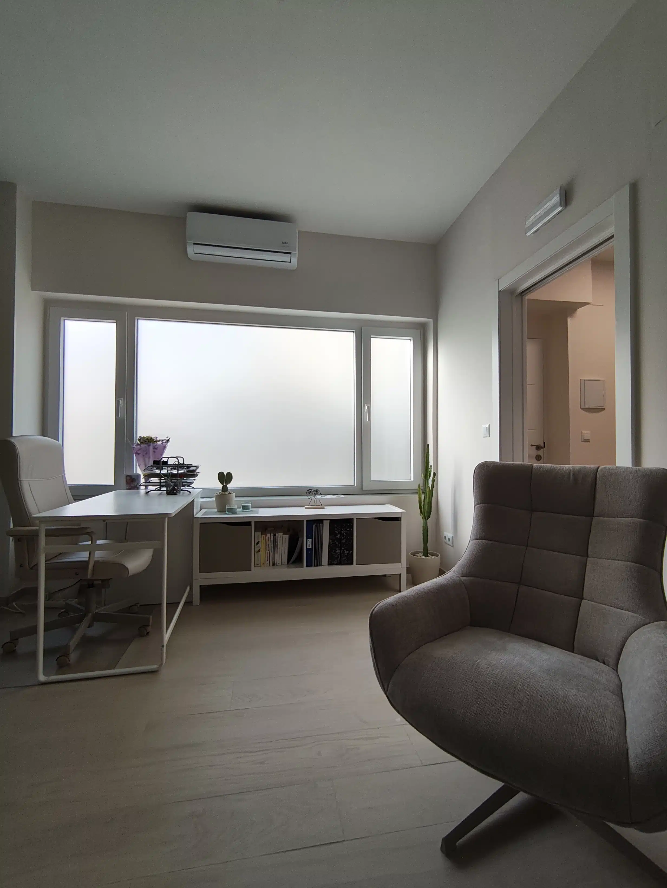
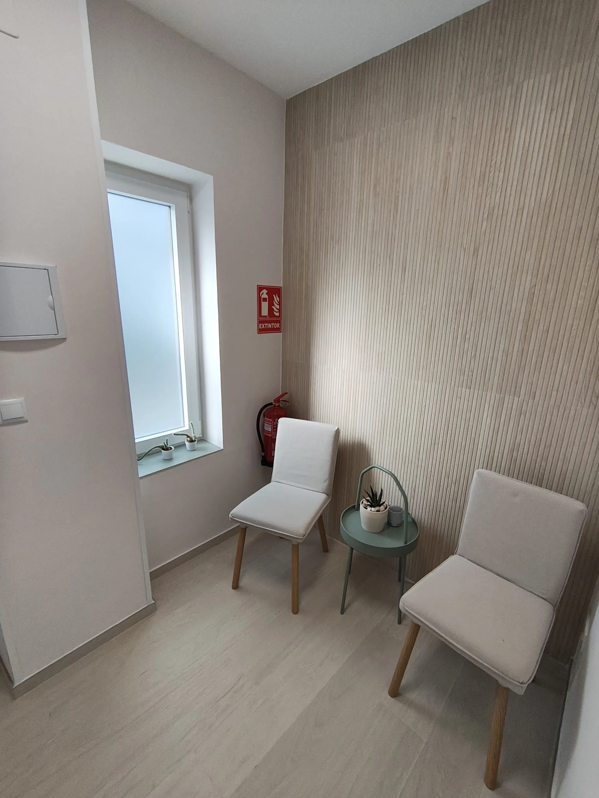
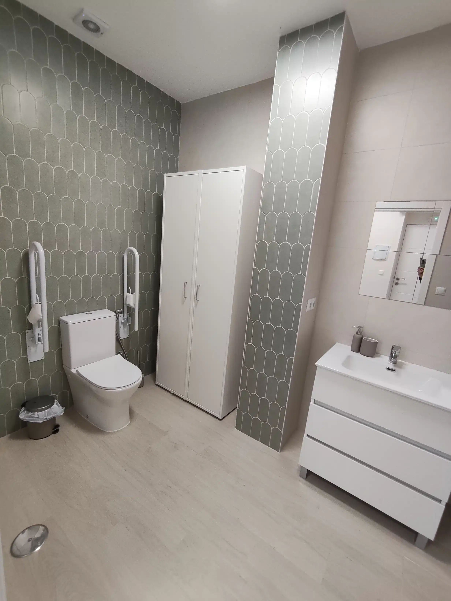

Una terapia comprensible y con dirección
Entender lo que te ocurre es el comienzo. Aprender a responder de otra forma es el cambio.
Mi forma de trabajar combina escucha, claridad y herramientas útiles. Construimos juntos un proceso adaptado a tu situación y conectado con tu vida fuera de consulta.
La consulta
Un espacio tranquilo, luminoso y cuidado.
Conocer el lugar antes de venir también ayuda. La consulta está preparada para ofrecer un entorno cómodo, privado y accesible en Nervión.




Cómo será el proceso
Una dirección clara, adaptada a tu ritmo.
La terapia no sigue un guion rígido, pero sí mantiene una orientación para que puedas entender qué trabajamos y reconocer tus avances.
- 01Comprender
Ordenamos lo que está ocurriendo
Escuchamos tu situación, el contexto y lo que necesitas en este momento.
- 02Orientar
Acordamos objetivos útiles
Definimos una dirección realista que tenga sentido para ti y para tu vida.
- 03Avanzar
Trabajamos y revisamos
Probamos nuevas respuestas, valoramos los cambios y ajustamos el proceso.
La primera sesión
No tienes que llegar sabiendo cómo explicarlo todo.
La primera cita sirve para empezar a ordenar lo que ocurre, conocer tu situación y valorar juntos un posible punto de partida. También es tu oportunidad para preguntar y comprobar cómo te sientes en este espacio.
Consultar citas disponibles- 1Me cuentas qué te trae a consultaA tu ritmo y sin necesidad de tener un relato perfecto.
- 2Ordenamos la situaciónVemos qué influye y cómo está afectando a tu vida.
- 3Valoramos el siguiente pasoResolvemos dudas y decidimos si el enfoque encaja contigo.
Tu primer paso
No necesitas tenerlo todo claro para empezar a cuidarte.
Podemos comenzar entendiendo qué está ocurriendo y valorar juntos cómo avanzar.